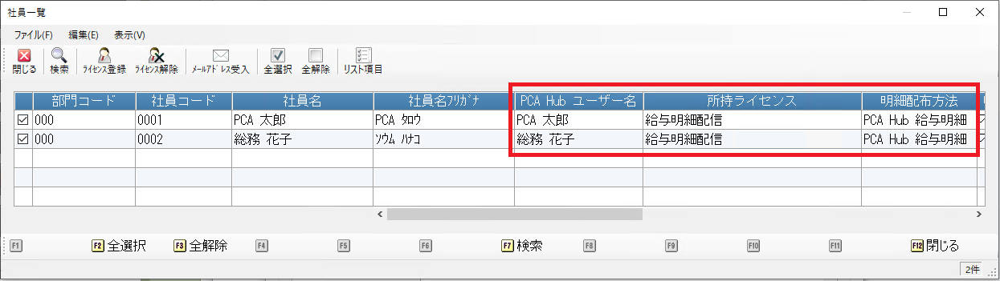
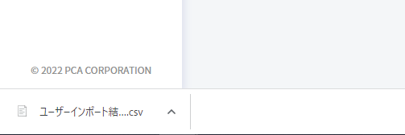
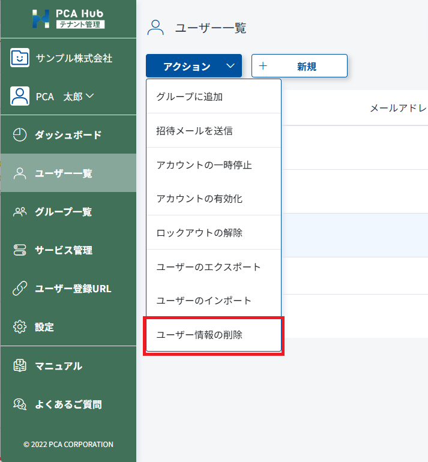

社員のアカウントを作成する
PCA Hub 給与明細を利用するには、PCA Hub のアカウントが必要です。
PCA Hub のアカウントは個別または一括で作成することができます。
PCA Hub アカウントは、テナント管理者が作成することもできますが、社員が自身で作成することもできます。
社員のアカウントを作成する
複数の社員アカウント作成方法があります。
いずれかの方法で作成をお願いします。
PCA給与シリーズから社員のアカウントを作成する
PCA給与シリーズから、社員のアカウントの作成、ライセンス登録を行うことができます。
こちらの方法は PCA Hub との連動設定の一部であるため、PCA Hub 給与明細のシステム管理者のみが行うことができます。
社員一覧画面にて「ライセンス登録」メニューを実行します。
ユーザー登録とライセンス付与を同時に行うか選択して実行します。
「ユーザー登録のみ行う」の実行後にライセンス付与を行う場合は「ユーザー登録とライセンス付与を行う」を選択してください。
アカウントが登録され、社員と PCA Hub アカウントの紐づけが完了したことを確認してください。

ポイント
-
チェックがONになっている社員を対象に、ライセンス登録を行います。
-
PCA給与シリーズの社員マスターにメールアドレスが設定されている必要があります。
-
「ユーザー登録とライセンス付与を行う」を選択して実行した場合、給与担当者による 社員と PCA Hub のアカウントを紐づける 操作は不要です。
手動でアカウントを作成する
テナント管理サイトのユーザー一覧にアクセスします。
［新規］ボタンをクリックして新規入力ダイアログを表示します。
［保存］ボタンをクリックして入力内容を保存します。
CSV ファイルからアカウントを作成する
テナント管理者と給与明細システム管理者が異なる場合の作成方法です。
給与明細配信のための設定を行う の インポート用の CSV ファイルを作成する にてCSVファイルを作成します。
テナント管理サイトのユーザー一覧にアクセスします。
アクションメニューから「ユーザーのインポート」をクリックして CSV ファイルを選択します。
インポートが完了して結果ログがダウンロードされるまでしばらく待ちます。
ダウンロードされたログファイルを開いてインポート結果を確認します。

社員自身がアカウントを作成する
テナント管理者がユーザー登録URLを発行し、社員に自身のアカウントを登録してもらうことができます。
テナント管理サイトのユーザー登録URLにアクセスします。
操作方法は URLを利用したユーザーの追加 をご確認ください。
対象社員に自身のアカウントを登録していただきます。
社員が登録したPCA Hub アカウントから、メールアドレスを受け入れます。
こちら をご確認ください。
対象社員を選択し、「ユーザー登録とライセンス付与を行う」を実行します。
対象のPCA Hub アカウントに、アカウントの初期設定を行うためのメールと、ライセンス付与のメールが送信されます。
PCA Hub アカウントが作成されたら
アカウントの初期設定を行うための手順は はじめてのログイン をご覧ください。
社員のアカウントを削除する
PCA給与シリーズから社員のアカウントを削除する
PCA給与シリーズから、社員のアカウントの削除、ライセンス解除を行うことができます。
こちらの方法は PCA Hub との連動設定の一部であるため、PCA Hub 給与明細のシステム管理者のみが行うことができます。
社員一覧画面にて「ライセンス解除」メニューを実行します。
ライセンスを解除するか、ユーザーを削除するかを選択して実行します。
手動でアカウントを削除する
テナント管理サイトのユーザー一覧にアクセスします。
アクションメニューから［ユーザー情報の削除］を選択します。
